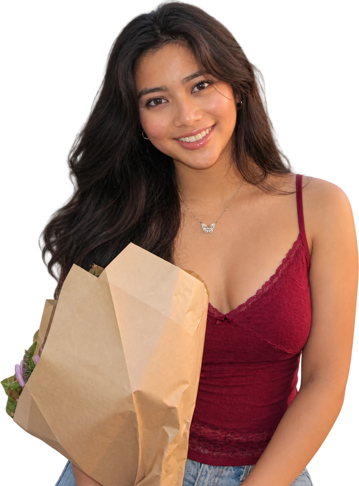

YOU
Bethany♡
Kate Bethany Marcera Caselmir
you have the key to my heart
I love you berry muchOut of the 8 Billion People, I'd still choose you everytime in any lifetime
Let me show you why ↘
and I cherish every second
Before a whole camera roll of you,
there was this.
This is one of my favorite photos because we both had no idea if we liked each other here but looking back it’s kinda obvious. This was also my first sleepover with you and I think it’s such a cute beginning to our story.
My favorite bean for life.Big occasions and little ones all matter to me when you’re with me.
I love learning about all the things you love and fun facts about you.
Kate Bethany Marcera Caselmir
Petar Milenkov
Two lives, one dance class, and a story
I never want to stop writing.
Love that stays with us forever.
I know Luna means so much to you so I wanted to include her here. She lived an amazing life and loved you very very much. I hope you know she is in your heart now and is always with you. But it’s completely okay to feel sad when you miss her extra. Whenever you feel that way, I’ll be right here for you.
Forever loved. Forever your girl. ♡